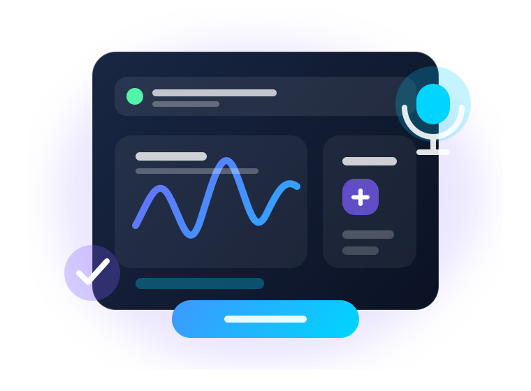

Speaker transcript
Speaker turns display as natural paragraphs with confidence highlights.
AI transcript SaaS project
An interview-ready Flask + Whisper project with async processing, history dashboard, exports, confidence highlights, and optional Claude-powered transcript questions.

Feature stack
Speaker turns display as natural paragraphs with confidence highlights.
Deadlines, todos, follow-ups, decisions, and budget mentions are surfaced automatically.
Ask questions against retrieved transcript context with optional Anthropic Claude support.
Uploads run in the background while the frontend polls a progress endpoint.
Past files show language, duration, word count, action count, and downloads.
Whisper timestamps become subtitle files for creators, editors, and media teams.
Live UI preview
This preview shows the product UI. The full Whisper transcription flow runs on Flask locally or through the Render Docker deployment.
00:01:23 Budget deadline is by Friday.
00:03:10 Follow up with the design team.
Q: What was decided about launch?
A: Launch was approved for next week.
Run locally
cd C:\Users\User\Desktop\transcript
.\.venv\Scripts\activate
pip install -r requirements.txt
mysql -u root -p -e "CREATE DATABASE IF NOT EXISTS transcribeflow;"
mysql -u root -p transcribeflow -e "SOURCE C:/Users/User/Desktop/transcript/schema.sql"
$env:DB_PASSWORD="your_mysql_password"
$env:WHISPER_MODEL="small"
python app.py